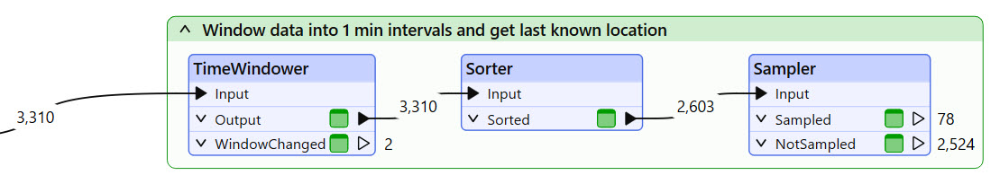
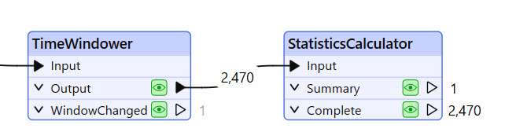
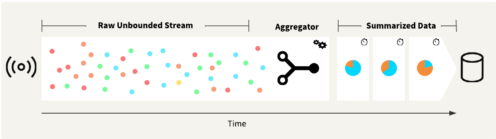
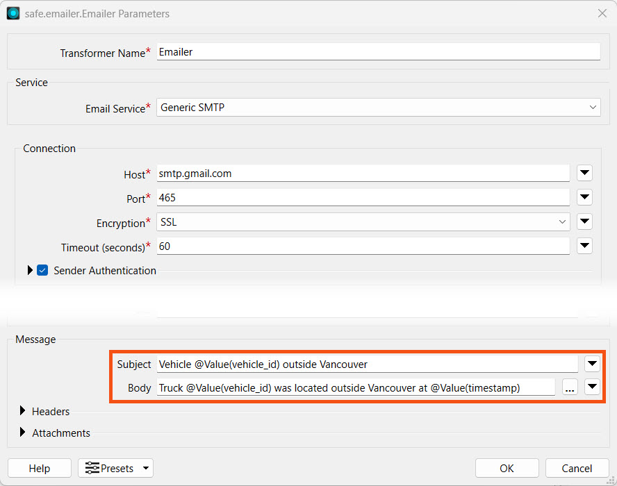
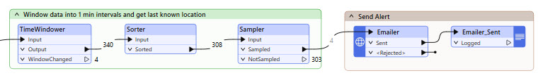
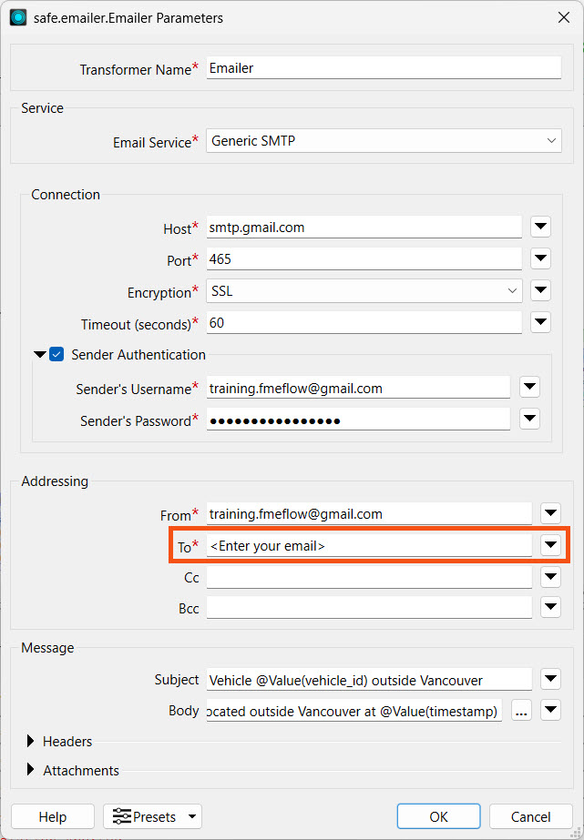
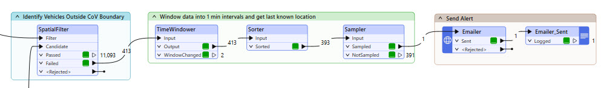
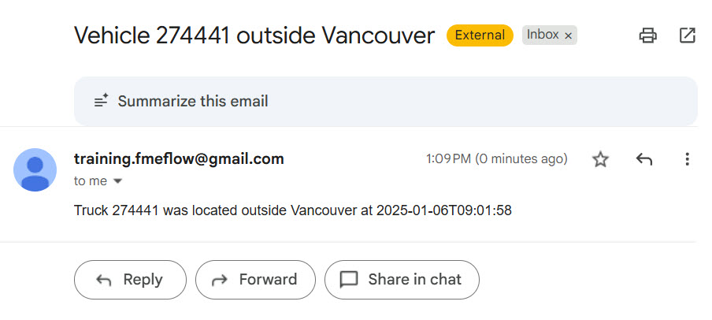

After completing this lesson, you will be able to:
Resources
Once you receive and process your stream data, the following steps are likely to involve sending an alert, storing the data, or both. When using streaming workspaces, you may consider grouping or aggregating data to prevent a high volume of alerts from being sent or records from being stored.
For example, the data stream we've been working with sends approximately 600 messages per second, which is an extremely high volume for sending alerts for each record. Even filtering by attribute, such as only for trucks in our fleet, only reduces those counts by about half, and 300 records per second is still extremely high. The TimeWindower transformer may help group your data into windows at regular time intervals rather than as the workspace processes records. However, you will still need to reduce your record counts. We used a Sorter and Sampler to do this by sampling the last record for each vehicle within each time window.

Another option is to summarize or aggregate your data, using transformers such as the StatisticsCalculator or Aggregator. These transformers group records, resulting in a "many in, few out" transformation.

Once you have summarized or aggregated the data, you can write it out or send an alert.

Once you reduce your stream data record count, you can send alerts and notifications for the records or scenarios of interest. The most common notification is sending an email with the Emailer transformer. The Emailer requires you to connect to an SMTP email server, such as Gmail or Microsoft Outlook, using credentials or a web connection. You may also customize the email subject and body to include data from the stream.

FME also has specific connectors, such as the SlackConnector, that send messages or alerts to other applications. If FME does not have a connector for your application, you may also send notifications through any API using an HTTPCaller or OpenAPICaller.
Due to the high volumes of records, writing and storing stream data commonly uses databases.
When using writers, it is essential to be aware of the Bulk Insert and Features per Transaction parameters to process high volumes of data efficiently. Bulk Insert uses the SQL COPY command instead of SQL INSERT and is more performant, especially when writing a large number of records per second. Features per Transaction is the number of records FME places in each transaction before committing them to the database. There's a balance between keeping the database updated and the number of transactions to the database that you must ensure, based on your data volume. If the number of features per transaction is too low, FME will continually submit records, potentially overwhelming the database with excessive transactions. However, if the number of features per transaction is too high, FME will not update the database frequently, and the database may become outdated as a result.
The FeatureWriter performs the same as writers, except you may also make use of the Group By option to write records when a group changes, such as the time window. Since the FeatureWriter is a feature-holding transformer, records will not be released through its output ports in stream mode unless Group By is enabled and set to "When Group Changes (Advanced)". If you need to write your stream data to a file, use the FeatureWriter instead of a file-based writer alongside a TimeWindower to group the data into windows.
Lastly, FME has some transformers that write records while running in stream mode. These are:
For more information on optimizing performance while writing to databases in FME, please check out the Optimize Workspace Performance course.
So far, you've helped Jennifer identify trucks that are outside of the City of Vancouver boundary in one-minute windows. Next, you will configure an email to send for each truck that is outside the boundary in the one-minute window. In reality, one-minute windows are very short, sending notifications every minute; however, for training purposes, we will continue to use one-minute intervals to limit the wait time for receiving alerts.
In this exercise, you will:
Continue with the same workspace open in FME Workbench from the previous exercise.
Expand and enable all objects in the Send Alert bookmark. Connect the Sampler's Sampled port to the Emailer.

Open the Emailer parameters. We have already configured the connection settings for you. Enter your email address as the email to send to.

All other Emailer parameters should be configured for you. If they are not, enter the following parameters:
- Email Service: Generic SMTP
- Host: smtp.gmail.com
- Port: 465
- Encryption: SSL
- Timeout: 60
- Sender Authentication: Enabled
- Sender's Username: training.fmeflow@gmail.com
- Sender's Password: wjdmzjdkujkzmplw
- From: training.fmeflow@gmail.com
- To: <Enter your email address>
- Subject: Vehicle @Value(vehicle_id) outside Vancouver
- Body: Truck @Value(vehicle_id) was located outside Vancouver at @Value(timestamp)
Run the workspace again using Stream mode.
Remember that the TimeWindower groups data into one-minute windows and the Sorter sorts the data in each window. To receive records from the Sorter to downstream transformers, you must let the workspace run for at least one minute to complete the first time window.
Once a record reaches the Emailer and passes through the Sent port, stop the workspace translation.

Check your email account for the email.

Your workspace meets Jennifer's needs. Next, you will deploy it as a stream on FME Flow to continuously monitor and process the data.
The data stream for the City of Vancouver's vehicle fleet is a simulated stream for training, meaning the data is not live and does not occur in real-time. The dates and timestamps you receive for the data will not match the current date and time.